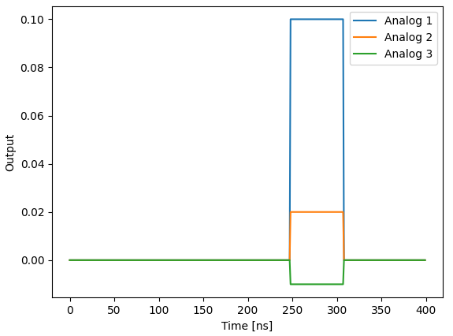

QUA Language Features¶
This document describes QUA language features that go beyond the simple use-case described in the QUA overview section.
For easier navigation we recommend using the table of contents to the left.
Measure statement features¶
The measure() command is a central command in QUA. It allows for the acquisition of ADC data corresponding to a readout pulse, its storage and processing.
The raw ADC data can be processed in several ways, as explained below.
Demodulation¶
where \(W^{4k+p}_{s,c}=\tilde{W}^{k}_{s,c} \forall p\in\{0,1,2,3\}\)
Note
The \(2^{-12}\) is a factor used to scale the result for the OPX fixed point accuracy
Types of demodulations:
Full demodulation¶
This is regular demodulation.
where \(n\) is the number of the total adc samples. The result is a fixed point value.
Syntax:
measure([pulse], [element], [stream],
demod.full([integration_weights],[output_variable],[analog_output]),...)
Examples:
measure("readout", "RR", None, demod.full("cos", I, "out1"))
measure("readout", "RR", None, demod.full("cos", I, "out1"), demod.full("sin", Q, "out1"))
Sliced demodulation¶
The demodulation is sliced into chunks according to the formula below. Save the result in an array.
where \(C\) is the chunk size in units of 4 ns.
Illustration:

Syntax:
measure([pulse], [element], [stream],
demod.sliced([integration_weights],[output_array],[chunk_size],[analog_output]),...)
Examples:
A = declare(fixed, size=10)
B = declare(fixed, size=4)
C = declare(fixed, size=4)
measure("readout", "RR", None,
demod.sliced("cos", A, 6, "out1"))
# The integration weights are, constant, of length 10*4*6 = 240
measure("readout", "RR", None,
demod.sliced("arb_integW", B, 11, "out1"),
demod.sliced("sin", C, 11, "out1"))
# Integration weights are length 4*4*11 = 176
Note
- The chunk size is in units of 4ns.
- For arbitrary integration weights, chunk size must be bigger than or equal to 7
- Duration of integration weights must be 4 *
chunk_size*array_size
Accumulated demodulation¶
where \(C\) is the chunk size in units of 4 ns.
Illustration:
{kind=link}
Syntax:
measure([pulse], [element], [stream],
demod.accumulated([integration_weights],[output_array],[chunk_size],[analog_output]),...)
Examples:
A = declare(fixed, size=10)
B = declare(fixed, size=4)
C = declare(fixed, size=4)
measure("readout", "RR", None, demod.accumulated("integW1", A, 7, "out1"))
measure("readout", "RR", None,
demod.accumulated("arb_integW", A, 11, "out1"),
demod.accumulated("sin", A, 11, "out1"))
Note
- The chunk size is in units of 4ns.
- For arbitrary integration weights, chunk size must be bigger than or equal to 7
- Duration of integration weights must be 4 * chunk_size * array_size
Moving window demodulation¶
where \(C\) is the chunk size in units of 4 ns and \(W\) is the chunks_per_window.
Illustration:
{kind=link}
Syntax:
measure([pulse], [element], [stream],
demod.moving_window([integration_weights],
[output_array],
[chunk_size],
[chunks_per_window],
[analog_output]),...)
Examples:
A = declare(fixed, size=10)
B = declare(fixed, size=4)
C = declare(fixed, size=4)
measure("readout", "RR", None, demod.moving_window("cos", A, 5, 3, "out1"))
measure("readout", "RR", None,
demod.moving_window("arb_integW", B, 7, 2, "out1"),
demod.moving_window("sin", C, 7, 2, "out1"))
!!! Note:
1. The chunk size is in units of 4ns.
2. For arbitrary integration weights, chunk size must be bigger than or equal to 7
3. Duration of integration weights must be 4 * chunk_size * array_size
4. Chunk size must be less or equal to array_size
Integration¶
The same as demodulation but at zero frequency, namely:
where \(W^{4k+p}_{c}=\tilde{W}^{k}_{c} \forall p\in\{0,1,2,3\}\)
Note
The \(2^{-12}\) is a factor used to scale the result for the OPX fixed point accuracy
Types of integrations:
Full¶
syntax:
measure([pulse], [element], [stream],
integration.full([integration_weights],[output_variable],[analog_output]),...)
Sliced¶
Syntax:
measure([pulse], [element], [stream],
integration.sliced([integration_weights],[output_array],[chunk_size],[analog_output]),...)
Accumulated¶
Syntax:
measure([pulse], [element], [stream],
integration.accumulated([integration_weights],[output_array],[chunk_size],[analog_output]),...)
Moving window¶
Syntax:
measure([pulse], [element], [stream],
integration.moving_window([integration_weights],[output_array],[chunk_size],[chunks_per_window],[analog_output]),...)
Time Tagging¶
The time-tagging feature populates a vector of time stamps that are associated with voltage edges typically generated by a single photon counting module (SPCM).
Time-tagging parameters¶
A time-tag is generated when the voltage in the OPX analog input meets two independent conditions, one for the signal and one for the signal's derivative. The time tagger logic is as follows:
- A tag will be registered in the ADC sample where both conditions are met simultaneously.
- As long as both conditions are true, no new tags are registered.
- Once one of the conditions turns false, the tagger is "armed" again and a new tag can be registered.
- The next tag will be registered in the next ADC sample, where both conditions are true again.
The time tagging parameters are set in a measuring element configuration.
There are two conditions on the signal. One for the value and one for the derivative which are defined by the parameters
signalThreshold and signalPolarity, and follow the following equation:
For signalPolarity set to 'Above':
For signalPolarity set to 'Below':
Where \(V(t)\) is the measured voltage at time \(t\). Similarly, the condition on the signal derivative follows the same logic:
For derivativePolarity set to 'Above':
For derivativePolarity set to 'Below':
For example, in the configuration block below, the time tagging is set to detect a voltage edge. The element spcm has the time tagging parameters defined in the outputPulseParameters block.
'spcm': {
"singleInput": {
"port": ('con1', 1)
},
'operations': {
'measure': 'measure_pulse'
},
"outputs": {
'out1': ('con1', 1)
},
'time_of_flight': 180,
'smearing': 0,
'outputPulseParameters': { # Time tagging parameters
'signalThreshold': -500,
'signalPolarity': 'Below',
'derivativeThreshold': -10000,
'derivativePolarity': 'Above'
}
},
Note that the condition on the derivative is chosen such that it will always be True. In that way, a time tag will be registered upon crossing the signal's threshold.
The example above showcases a common usage of the time tagger as a voltage edge detector which would detect a falling edge through \(~122 mV\), since the units are in ADC samples (12 bits) and \(-500/-4096=-0.122\). The minus sine is added to account for the internal inversion of the OPX's ADC.
For a gaussian input as shown below, the parameters above would detect the falling edge at \(t=210 ns\).
If the signalPolarity would be changed to Above, the rising edge would be detected at \(t=270 ns\).

Tip
For most use-cases, we recommend setting the the derivativeThreshold and derivativePolarity as in the example above.
Info
Due to backwards compatibility, the parameter's values can also be Ascending for Above and Descending for Below
Info
If the 'outputPulseParameters' dictionary is left empty, the default values are used.
The user must supply all values, or none. The default values are as follows:
Time-tagging modes & usage¶
Basic time-tagging¶
Basic time tagging has a resolution of 1ns with a dead time of 2ns. Time-tagging is done in a measure statement, with the following syntax:
counts = declare(int)
times = declare(int, size=10)
measure([pulse], [element], [stream], time_tagging.analog(times, [duration], counts)
timesis a vector of integers into which the times of the detected pulses are saved (in ns).max_timegives the maximum time window, in ns, during which the statement waits for tag arrival.countsis a variable that is populated with the number of tags which arrived during the measurement.
High resolution time-tagging¶
High resolution time tagging has a resolution <50ps with a dead time of 84ns.
The high resolution time-tagging is done in a measure statement, with the following syntax:
counts = declare(int)
times = declare(int, size=10)
measure([pulse], [element], [stream],
time_tagging.high_res(times, [duration], counts))
timesis a vector of integers into which the times of the detected pulses are saved (in ps).max_timegives the maximum time window, in ns, during which the statement waits for tag arrival.countsis a variable that is populated with the number of tags which arrived during the measurement.
Flow control¶
Branching¶
If, Elif & Else¶
The simplest way to use branching is using the if_() statement. Usage of the if_(),
elif_() & else_() conditional is demonstrated in thecode block below.
Here, op1 is played if a is larger than 1, op2 is played if it's between -1 and 1, and op3 is played if it is below -1.
a is a fixed QUA variable in this case, which can be the result of a measurement or a classical computation.
with if_(a>1):
play('op1', 'qe')
with elif_(a>=-1):
play('op2', 'qe')
with else_():
play('op3', 'qe')
Switch Case¶
It is also possible to use a switch_()-case_(), as shown in the example below.
Here, op1 will be played if a=1, op2 will be played if a=2, and default_op will be played otherwise.
a is an int QUA variable in this case, which can be the result of a measurement or a classical computation.
with switch_(a):
with case_(1):
play('op1','qe')
with case_(2):
play('op2','qe')
with default_():
play('default_op','qe')
In the example below, the switch case is inside a QUA for_ loop, which means that at each iteration of the loop, a
different operation will be played.
with for_(j, 0, j < 16, j + 1):
...
with switch_(j):
with case_(1):
play('op1', 'qe')
with case_(2):
play('op2', 'qe')
with case_(3):
play('op3', 'qe')
...
...
Writing this structure can be further simplified by wrapping the code with a Python for loop:
with for_(j, 0, j < 16, j + 1):
...
with switch_(j):
for i in range(16):
with case_(i):
play(f'op{i}', 'qe')
...
The switch case operation has an optional flag, unsafe that can be used to decrease the gaps that might be created when using switch-case
inside a loop, such as in the example above. However, this flag cannot be used with with default_():, and in
addition, if a value in the switch does not match any of the values in the case, unexpected behavior can occur.
The usage can be seen in the following example:
with for_(j, 0, j < 16, j + 1):
...
with switch_(j, unsafe=True):
for i in range(16):
with case_(i):
play(f'op{i}', 'qe')
...
Conditional Play¶
It is also possible to add a condition directly in the play() command. The pulse would only be played if the condition
is evaluated to True. This would result in a quicker evaluation of the condition, compared to using an if_, and
can be used when feedback latency is critical.
Important
If there is a digital pulse associated with the operation, it will always be played, regardless of the condition.
Ternary Operator¶
The ternary operation is available via the Util API, and can be used to quickly evaluate
a condition to decide between two parameters, this would result in a quicker evaluation of the condition, compared to using an if_.
In the example below, the duration of the pulse will be c if a > 0 otherwise it would be d. c and d can be either QUA variables,
or constants.
Loops¶
For¶
The QUA for_() loop is similar to a python loop, having a (var, start, end_cond, step) structure.
The following block of code plays a pulse five times, running over a QUA variable t, and uses it for the pulse
duration.
For_Each¶
The QUA for_each_() loop scans the variable through a predefined vector. This is a bit less efficient compared to the
for_ loop above, but can scan arbitrary points.
It is possible to loop over a tuple of variables, similar to the zip style iteration in python:
t_vec = [10, 15, 30]
a_vec = [0.25, 1.0, 0.5]
t = declare(int)
a = declare(fixed)
with for_each_((t, a), (t_vec, a_vec)):
play('pulse' * amp(a), 'qe', duration=t)
In both cases, t_vec and a_vec can also be QUA arrays
Note
for_each_ loops are more resource intensive and unlike for_ loops, have a maximum size.
While¶
The while_() loop is executed for as long as the condition is True. The following block of code plays a pulse 5 times.
Pause, Resume and IO variables¶
QUA programs can be paused by using the pause() QUA command. When a pause command is reached, the OPX completely halts
the execution of the program until a resume() command is sent using the Job API.
This could be used to control an external device, such as an LO source. When the program is paused, data
can be sent between the client PC and the real-time program using 2 available IO variables (Input/Output variables).
The following examples shows basic communications between the client and QUA program using this pause and resume
technique.
Setting an IO variable¶
In this QUA program, a pause() precedes the play() command, which plays a pulse with an amplitude dynamically set by an IO variable.
with program() as prog:
N = declare(int)
a = declare(fixed)
with for_(N, 0, N < 100, N + 1):
pause()
assign(a, IO1)
play('pulse'*amp(a), 'qe')
When the pause command is encountered, the execution waits for a resume() command, with usage as shown below:
job = qm.execute(prog)
current_vals = np.linspace(1e-3, 5e-3, 100)
for val in current_vals:
while not job.is_paused():
time.sleep(0.001)
qm.set_io1(val)
job.resume()
Reading an IO variable¶
IO values can also be used to extract information of a running program. For example, update the LO frequency to some value calculated in real-time, in the OPX. The following example demonstrate such use case with an IO variable:
with program() as prog:
rt_lo = declare(fixed)
... # 1st part of the program including calculation for rt_lo
assign(IO2, rt_lo)
pause()
... # 2nd part of the program
In Python we can have a code block that iteratively checks the IO value and act upon that, for example:
job = qm.execute(prog)
while not job.is_paused():
time.sleep(0.001)
LO = get_io2_value()
# do something with new LO
job.resume()
Relevant APIs¶
See the following APIs for using IO variables:
Input streams¶
Input streams allows passing data from the client computer to a running job in the OPX+ with
minimal latency. To use one, you must first declare it in the QUA program using the
declare_input_stream() command. The declaration is similar to the declaration of a normal QUA
variable. You need to define its type (int, fixed, bool), it's name, and optionality, its size or values.
Once declared, you can use it as you would use any other QUA variable, with the exception that you have two new
available commands:
- Outside the QUA program, in Python, you can use
insert_input_stream()from the job API to pass data into the QUA program. Note that you can pass multiple values and later access them one by one in QUA. - Inside the QUA program, you can use
advance_input_stream()function to access the next available data. If there is no available data, this command will pause the OPX and wait until data is available.
Note
The data inserted using insert_input_stream() must match the size of the input stream.
For example:
with program() as example_input_stream:
truth_table = declare_input_stream(bool, name='truth_table_input_stream', size=10)
tau = declare_input_stream(int, name='tau_input_stream')
...
with while_(some_qua_cond):
advance_input_stream(tau)
advance_input_stream(truth_table)
play('operation', 'element0', duration=tau, condition=truth_table[0])
play('operation', 'element1', duration=tau, condition=truth_table[1])
play('operation', 'element2', duration=tau, condition=truth_table[2])
...
...
...
job = qm.execute(example_input_stream)
...
while some_cond:
qubit_states = read_from_external_device()
calc_tau = calculate_tau()
job.insert_input_stream('truth_table_input_stream', qubit_states)
job.insert_input_stream('tau_input_stream', calc_tau)
Timestamp Stream¶
,
It is possible to retrieve the precise timestamp of any
play() and measure()
commands from the beginning of an executed program,
and use it for circuit analysis and verification.
This capability covers real-time logic with non-deterministic outcomes (measurements) and compiler scheduling due to optimizations unknown to the user.
To retrieve the timestamp stream you must provide the play() or measure() command with a user-defined string, using the keyword argument timestamp_stream.
The timestamp stream is returned using the results_handle as an array where each element shows the timestamp
at which the play/measure command associated with this stream was executed. The time is given in clock cycles (4 ns per cycle)
The following block of code demonstrates how to use the timestamp stream:
with program() as prog:
# define timestamp streams
play('pulse', 'qe', timestamp_stream='play_timestamps')
measure('readout', 'readout_element', timestamp_stream='measure_timestamps')
# retrieve the timestamp stream
job = qm.execute(prog)
play_timestamps = job.result_handles.get('play_timestamps').fetch_all()
measure_timestamps = job.result_handles.get('measure_timestamps').fetch_all()
Alternatively, timestamp streams can be retrieved using a stream variable rather than a string, and this variable can be used for further processing. For example let's look at the difference between play and measure commands:
with program() as prog:
# define timestamp streams
s_play = declare_stream()
s_measure = declare_stream()
play('pulse', 'qe', timestamp_stream=s_play)
measure('readout', 'readout_element', timestamp_stream=s_measure)
with stream_processing():
(s_measure-s_play).save_all('diff_timestamps')
# retrieve the timestamp stream
job = qm.execute(prog)
diff_timestamps = job.result_handles.get('diff_timestamps').fetch_all()
Sticky Element¶
When an element is defined as sticky, the last analog value played at the end of a pulse will be held until the next pulse begins. This is useful, for example, for semiconductor qubits where one wants to avoid the noise associated with the switching of the bias voltage.
Starting from an element can be defined as sticky by adding the
'sticky': {'analog': True } dict to its configuration.
The previous API, used up until using
'hold_offset': 50 } is still supported, and a deprecation warning will be issued.
Importantly, when an element is sticky, the values of the currently playing pulse will be added to the previously held value.
A sticky element always ramps back to its DC offset value when the element has reached its final instruction of the program.
The duration of the ramp in ns can be set by configuring 'sticky': {'analog': True, 'duration': 50 }.
This ramp can also be explicitly initiated by the ramp_to_zero() function.
Note
With the previous API the ramp time was defined in clock cycles using hold_offset using the new API with
the ramp time is defined in ns, consistently with any time duration in the configuration. Note that this is not a breaking change since the old API,
i.e. using
hold_offset to define the ramp duration in clock cycles is still supported.
Starting from , it possible to set the digital marker, associated with the sticky element, to be sticky as well
by configuring
\'sticky\': {\'analog\': True, \'digital\': True }. Doing so will hold the last value of the digital
marker until the next pulse begins. Playing the next digital marker will override the held value and once again the last
value will be held. Once a ramp to zero has been initiated at the end of the sequence or upon command,
the digital marker will stop at the beginning of the ramp. This can be seen in the figure shown below (lower panel) when the digital pulse sets down at about 2600 ns.
Warning
The amplitude of sticky pulses is accumulated with a resolution of 16 bit.
Therefore, N changes to the sticky pulse amplitude can result in an amplitude inaccuracy of about \(N \cdot 2^{-16}\).
To null out this accumulated error, it is recommended to use ramp_to_zero() from time to time.
Alternatively, defining the amplitude of pulses of sticky elements to be in 16-bit resolution will prevent accumulated errors.
When using *amp(), the last waveform sample multiplied by the scale factor should be in 16-bit resolution.
An easy way to round in QUA would be to use bit-shifting
The sticky element behavior is simply shown in the following example. We first define the quantum element as follows:
"qe1": {
"singleInput": {
"port": ("con1", 1)
},
"digitalInputs": {...},
'intermediate_frequency':0,
'sticky':{
'analog': True,
'digital': True,
'duration': 200
},
'operations': {
'pulse': "pulse",
},
},
"qe2": {
"singleInput": {
"port": ("con1", 1)
},
"digitalInputs": {...},
'intermediate_frequency':0,
'operations': {
'pulse': "pulse",
},
}
Note the {'duration': 200} which sets the ramp to zero duration, in clock cycles.
We also define a second quantum element qe2 which is not sticky.
We can then run a simple program playing the same constant pulse twice, for the two different quantum elements:
with program() as prog:
play('pulse','qe1')
wait(100,'qe1')
play('pulse','qe1')
wait(100,'qe2')
play('pulse','qe2')
wait(100,'qe2')
play('pulse','qe2')
The resulting pulse sequence is shown below, where the sticky element is in blue and the non-sticky element is in orange.

The duration of each pulse is 1000 samples, with the sticky element in blue maintaining its final value between its first and second play commands. Furthermore, the second pulse on the sticky element is added to the last pulse sample. At the end of the program, the blue trace is ramped to zero within 200 clock cycles, as defined in the configuration. The lower panel shows the non-sticky (blue) and the sticky (orange) digital markers associated with each element, with the sticky pulse also held between pulses.
Note
The example above is for an element without an intermediate frequency. In case of an element with an intermediate frequency, the output will be a sine wave with the last amplitude.
Voltage Easing¶
A ramp to zero can be initiated on a sticky pulse at any point by calling the ramp_to_zero(qe,duration) function.
The duration parameter is optional and can be used to override the configuration value.
The waveform below was generated by running this program:
{kind=link}
Note the first pulse eases to zero at a double rate compared to the second one.
Ramp Pulse¶
It's possible to generate a voltage ramp by using the ramp() command.
The slope argument is specified in units of V/ns. Usage of this feature is as follows:
Note
The pulse duration must be specified if the ramp feature is used.
The slope can either be a literal (as shown above) or a QUA variable or expression. For example, consider the following snippet.
d=1000
max_v=0.35
n=1000
with program() as myFirstProgram:
a = declare(fixed)
with for_(a, max_v/d/10, a <= max_v/d, a +max_v/d/n):
play(ramp(a/2), 'qe1', duration=d)
play(ramp(-a/2), 'qe1', duration=d)
The quantum element qe1 is defined as a sticky pulse and the resulting waveform is therefore triangular in each loop step as is shown in the image below.
!!
Frequency Chirp¶
This feature allows to perform a linear sweep of the element's intermediate frequency in time. Chirp parameters can be updated in run-time, inside a QUA program.
Basic usage of this feature is performed as follows:
Because the supported chirp rate spans many orders of magnitude, from mHz/sec to GHz/sec, it is defined by both a rate
numeric variable and a units string. Supported units are (exactly) one of the following: 'Hz/nsec', 'mHz/nsec', 'uHz/nsec',
'pHz/nsec' or their equivalent rates per-second: 'GHz/sec', 'MHz/sec', 'KHz/sec', 'Hz/sec', 'mHz/sec'. The rate itself is an integer,
which can either be a QUA variable or a python literal.
A spectrogram of a positive chirp rate followed by a negative rate is shown below. The chirp duration is defined by the duration of the used pulse.
with program() as prog:
chirp_rate = declare(int, value=25000)
play("pulse", "qe", chirp=(chirp_rate , 'Hz/nsec'))
play("pulse", "qe", chirp=(-25000, 'Hz/nsec'))
{kind=link}
It is possible to directly define a piecewise linear chirp by providing a list of rates as shown below. This is a convenient method to approximate non-linear chirp rates. In this case each chirp section will have the same duration, equal to the total pulse duration divided by the number of sections.
with program() as prog:
a = declare(int, value=[25000, 0, 50000, -30000, 80000])
play("pulse", "qe", chirp=(a, 'Hz/nsec'))
# equivalent program:
with program() as prog:
play("pulse", "qe", chirp=([25000, 0, 50000, -30000, 80000], 'Hz/nsec'))

Non-uniform Chirp Sections¶
A list of linear chirp rates can be specified at uniform intervals in time as shown above. You can also have non-uniform sections by passing a second list, giving the clock cycle number where the next chirp rate is set to start. This is shown in the example below:
rates = [199, 550, -997, 1396]
times =[0, 15196, 25397, 56925]
with program() as prog:
play('pulse', 'qe', chirp=(rates,times, 'Hz/nsec'))

Mathematical Formulation of the Chirp¶
The frequency in every piecewise linear section is given by:
Where \(\alpha\) is the chirp rate, \(t\) is the time and \(f_0\) is the initial frequency.
The accumulated phase is given by:
Note that this discrete implementation of the chirp differs by one time-step from the continuous frequency chirp which yields
Continuous Chirp¶
Note
The continuous chirp feature only exists in the OPX+
It is possible to have the frequency chirp continue even after the pulse has stopped playing.
This will cause the frequency to continue increasing in the background and continue during the next play commands.
To use, add to the play command the kwargs continue_chirp=True, such as in the following example:
with program() as prog:
play("pulse", "qe", chirp=(-25000, 'Hz/nsec'), continue_chirp=True)
wait(100, "qe") # Chirping continues in the background
play("pulse2", "qe") # Chirping continues, but stops after this pulse ends
play("pulse", "qe", chirp=(-25000, 'Hz/nsec'), continue_chirp=True)
play("pulse2", "qe", continue_chirp=True) # Chirping continues
play("pulse3", "qe", chirp=(25000, 'Hz/nsec')) # Chirping changes to the value given and will stop after this pulse ends
This could be useful when combined with sticky elements, in which case the pulse will continue playing.
Crosstalk Matrix¶
Note
The crosstalk matrix only exists in the OPX+
It is possible to add crosstalk terms between any ports in the same controller of the OPX. Adding a crosstalk term means that anything that comes out from a given port of the OPX will also come out of other ports of the OPX, with the given amplitude factor. The crosstalk is being applied before the Filters, which means that any filters applied on a port will only affect that specific port. This could be useful to correct for electronic crosstalk that exists between different control lines.
Warning
Adding a crosstalk term to any port will delay all analog pulses coming out from all ports. The delay will be 8 cycles (32 ns).
Starting from
, it is possible to add the compilation flag
disable-crosstalk-matrix-ports-alignment to only delay the ports which participate in the crosstalk matrix.
Usage Examples¶
The crosstalk terms can be configured at the OPX configuration file, with a different terms applied to each analog output in each controller.
To configure, add a crosstalk term in the analog_outputs field:
'controllers': {
'con1': {
'analog_outputs': {
1: {'offset': 0.0},
2: {'offset': 0.0, 'crosstalk': {1: 0.2}},
3: {'offset': 0.0, 'crosstalk': {1: -0.1}},
},
}
}
In the example above, any pulse played to output number 1 would also come out from ports 2 & 3 with an amplitude factor of 0.2 and -0.1 respectively, as seen in the following example:
!!
{kind=link}
Pulse Memory Compression¶
In order to optimize memory allocation the QUA compiler takes into account the frequency content of each pulse.
Each waveform's FFT is used to calculate the cutoff frequency f_cut under which 99.9% of the waveform's energy lies.
Each waveform then receives a score based on its cutoff frequency f_cut and the waveform's length.
The memory is then allocated to each waveform based on this score.
The compiler also calculates the error between the original and interpolated waveforms and
issues an error if it is larger than 1e-4:
The user can add to the waveform the parameter maxAllowedError:
# Setting the 'maxAllowedError' parameter to 1e-2 instead of the default
'waveforms': {
'wf1': {
'type': 'arbitrary',
'samples': [0.49, 0.47, 0.44, ...],
'maxAllowedError': 1e-2
},
},
That will override the default value (1e-4) allowing the user to tweak memory allocation. Alternatively, the user can simply control the sampling ratio of the pulse:
# Setting the 'maxAllowedError' parameter to 1e-2 instead of the default 1e-3
'waveforms': {
'wf1': {
'type': 'arbitrary',
'samples': [0.49, 0.47, 0.44, ...],
'sampling_rate': 0.5e9
},
},
The sampling_rate parameter specifies the sampling rate in units of Samples/sec.
Any time a pulse is compressed, the compiler will output a warning and the compression factor:
WARNING - Waveform wf_long was compressed with rate 0.6548853220189729 and error of 1.6128764990241962E-13
Dynamic Pulse Duration¶
The duration of the pulse can be stretched (but, in the case of an arbitrary waveform, not compressed) using the 'duration' parameter:
# Stretching the pulse length
play(pulse, element, duration = 100)
# One can also use a variable or an expression
play(pulse, element, duration = 2*t+100)
durationis given in clock cycles units.- The stretched pulse is calculated from the original pulse using a 3rd order Lagrange interpolator on a 4 points running window.
The 'duration' parameter can accept a general mathematical expression composed of operators (+, -, *, /), numbers, QUA variables and QUA functions (such as cos and sin).
Warning
When playing an arbitrary waveform, if the value of the duration parameter is set to below the original pulse length, corrupted output may occur.
Truncate Pulses¶
Part of a pulse can be played by using the truncate parameter:
# Truncating the pulse length
play(pulse, element, truncate = 10)
# One can also use a variable or an expression
play(pulse, element, truncate = 2*t+10)
# It is possible to both stretch the pulse and truncate it
play(pulse, element, duration = 40, truncate = 10)
truncateis given in clock cycles units, with the minimum being 4 cycles.truncate=nwill cause the first n cycles of the pulse to be played, this could be useful, for example, for exploring the dynamics of a qubit while a pulse is being played.- If a pulse is given a dynamic duration, it will first be stretched to the given duration and then truncated.
The 'truncate' parameter can accept a general mathematical expression composed of operators (+, -, *, /), numbers, QUA variables and QUA functions (such as cos and sin).
Warning
If the 'truncate' parameter is longer than the pulse duration, it'll cause unexpected results.
Dynamic Port Allocation¶
It is possible to define an element with multiple inputs. At runtime, you can select to which port you want to play.
To define such an element in the config, use the singleInputCollection dictionary item:
'aom_selector': { # An example element that can play to either port 1 or 2
"singleInputCollection": {
"inputs": {
"row": ('con1', 1),
"column": ('con1', 2),
}
},
'intermediate_frequency': 100e6,
'hold_offset': {'duration': 200},
'operations': {
'pulse': "pulse",
},
},
At run time, use the target parameter of the play() command:
Multiple Inputs¶
When playing a pulse, it is possible to output it from multiple ports simultaneously.
This is done using the multipleInputs dictionary item:
'qubit': {
'multipleInputs': # An example elemnt that will play from ports 1 and 2 simultaneously
{
'inputs': {
'input1': ('con1', 1),
'input2': ('con1', 2)}
},
'operations: {
'const': 'const_pulse',
},
},
Using the play command:
The pulse will then play to both port 1 and port 2 simultaneously, as seen in the figure below:
{kind=link}
Analog Delay¶
We can add a delay to the analog ports of up to 16 microseconds, in units of ns.
To do so, simply specify the desired delay in the port's configuration. For example
Here we specify a 110 ns delay for all signals coming out of port 1 and a 21 delay on all signals coming out of port 2.
Inverted Digital Marker¶
The digital marker can be configured to be inverted, for example to suit both 'normally on' and 'normally off' switch types.
The HIGH state will be the default state when configuring
'inverted': True for a digital output, and the marker will switch to the LOW state when a digital pulse is played.
To do so we configure this property in the port's configuration. For example
Note that the default value ofinverted is False. When inverted, The output of the digital marker will change to HIGH
immediately when the QM is opened and will resort back to the default behavior (LOW) when the QM is closed.
Threads¶
The maximum number of quantum elements that can be used simultaneously is limited by the number of processing threads in the hardware. A single-input quantum element requires one thread and a mixed input (IQ) element uses two threads, one for each channel. The OPX has \(N_{threads}=10\) threads and the OPX+ has \(N_{threads}=18\). By default, threads are not shared between different quantum elements. However, two (or more) quantum elements which are never played together can share a thread, as explained below. Sharing threads allow the user to define more quantum elements and write more complex programs.
Automatic Thread Allocation¶
It is possible to add a flag when executing a QUA program that will enable the Automatic Thread Allocation. In order to enable it, use:
When the flag is set, the QUA compiler will automatically try to figure out which elements are never played together and these elements will share a thread.
Since the code can be complicated and not deterministic, the compiler uses the align statement to know which quantum elements are playing in parallel and which are not.
For example:
with program() as prog1:
a = declare(fixed)
play("marker", "qeDig")
play("pulse", "qe2")
align("qe2", "qeDig")
play("marker", "qeDig")
with for_(a, 0.2, a < 0.9, a + 0.1):
play("pulse" * amp(a), "qe1")
It seems that "qeDig" plays in parallel with both "qe1" and "qe2", but "qe1" and "qe2" never play in parallel. This means that "qe2" and "qe1" can share the same thread.
Because the align statement is being used for the Automatic Thread Allocation, it is important to use it whenever possible.
Manual Thread Allocation¶
It is also possible to manually assign the threads to the quantum elements, when defining them, in the following manner:
config = {
...
'elements': {
'qe1': {
"thread": "a",
...
},
'qe2': {
"thread": "a",
...
},
'qe3': {
"thread": "b",
...
},
'qe4': {
...
},
}
...
}
In the example above, "qe2" and "qe1" are assigned to thread "a" and can never run at the same time. "qe3" is being assigned to thread "b". Any quantum element which does not have a thread directly specified will have its own thread.
Note
If "qe1" has two inputs (i.e. an IQ pair) it will actually be assigned two threads. If "qe2" has a single input, it will use one of the threads which is used by "qe1".
If "qe2" and "qe1" will be given a play command, they will be played one after the other and not at the same time. For example:
In the example above, "qe1" will be played first and only when it is done "qe2" will be played. Because "qe3" is on another thread, it will start immediately with "qe1". See examples here
Oscillators¶
In addition to limited threads, there is also a limited number of internal oscillators. The OPX has \(N_{osc}=10\) and the OPX+ has \(N_{osc}=18\). This limits the number of quantum elements with an intermediate frequency. However, it is possible to share oscillators between different elements. For information on how to define shared oscillators, see the configuration page.
Sharing oscillators between elements shares their frequency, their frame and their mixer correction matrix.
This means that any operation that affects these on any of the elements, would affect them all.
In the following example, qe1, qe2 and qe3 share an oscillator:
with program() as prog:
update_frequency("qe1", 50e6)
play('const', 'qe2') # Plays a 50 MHz pulse
update_frequency("qe1", 100e6)
play('const', 'qe2') # Plays a 100 MHz pulse
frame_rotation_2pi("qe3", 0.5)
play('const', 'qe2') # Plays a 100 MHz pulse, but with the frame rotated by pi
Precompile Jobs¶
It is possible to separate the compilation and the execution parts of running a job, which is useful when a job is
repeated many times and the compilation run time is not negligible.
To precompile a job, use the compile function:
This will return a program_id, which can later be directly added to the JobQueue:
This can be done many times with a program which has been compiled once.
In addition, it is possible to change an analog waveform between runs using the overrides argument of the
add_compiled function:
qm.queue.add_compiled(program_id, overrides={
'waveforms': {
'my_arbitrary_waveform': [0.02] * 1000,
'my_constant_waveform': 0.2
}
})
An arbitrary waveform has to be declared as overridable in advance in the configuration file. For the example above:
Note
The number of samples in the new waveform has to be the same as in the old waveform.
It is currently not possible to change the bandwidth of an overridable arbitrary waveform. Therefore, the
samplingRate and maxAllowedError properties are not supported when "is_overridable: True".
Compilation Options¶
There are a few optional features and modification in the compilation process from QUA to the OPX low-level code. These options can be activated by passing a list of flags to the execution, compile or simulation.
The following is a short list of optional flags and their description:
- 'auto-element-thread' - Used when thread sharing is required. The compiler will automatically determine which elements can share a thread and allocate the resources accordingly. See further information here.
- 'disable-filtered-ports-alignment' - Starting from version
on OPX+, this flag will disable the temporal alignment between analog ports that are filtered with a digital output filter and those that are not. This will reduce latency for unfiltered ports when using the filters. In addition, this flag will disable the automatic adjustment of the time-of-flight and digital delays parameters in the configuration. Read more about the latency in the output filter guide.
- 'disable-crosstalk-matrix-ports-alignment' - Starting from version
on OPX+, this flag will disable the temporal alignment between analog ports that participate in the crosstalk matrix and those that are not. This will reduce latency for these ports when using the crosstalk matrix. In addition, this flag will disable the automatic adjustment of the time-of-flight and digital delays parameters in the configuration. Read more about the latency in the output filter guide.
- 'skip-loop-unrolling' - Disables an optimization over loop iterations. This gives faster compilation time at the cost of more program memory use and possibly more gaps.
- 'skip-loop-rolling' - Disables another optimization over loop iterations. This gives faster compilation time at the cost of more program memory use.
- 'not-strict-timing' -
strict_timing_()block will not block execution by raising warnings instead of errors. Read more about the strict timing feature here.
The way to use these compilation options depends on the qm-qua Python package version. Choose your version below to see how:
qm.execute(prog, flags=['flag1', 'flag2']) # execution
qm.compile(prog, flags=['flag1', 'flag2']) # compilation
qmm.simulate(config, prog, SimulationConfig(duration), flags=['flag1', 'flag2']) # simulation
For example, in the following code, we execute a program with the automatic thread allocation compilation option:
from qm import CompilerOptionArguments
my_compiler_options = CompilerOptionArguments(flags=['flag1', 'flag2'])
qm.execute(prog, compiler_options=my_compiler_options) # execution
qm.compile(prog, compiler_options=my_compiler_options) # compilation
qmm.simulate(config, prog, SimulationConfig(duration), compiler_options=my_compiler_options) # simulation
For example, in the following code, we execute a program with the automatic thread allocation compilation option: